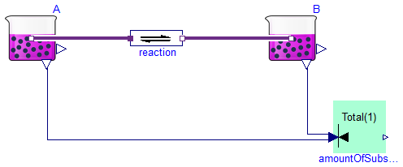
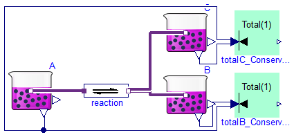
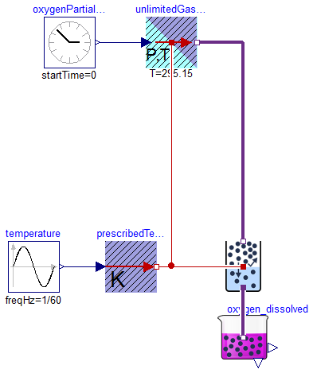
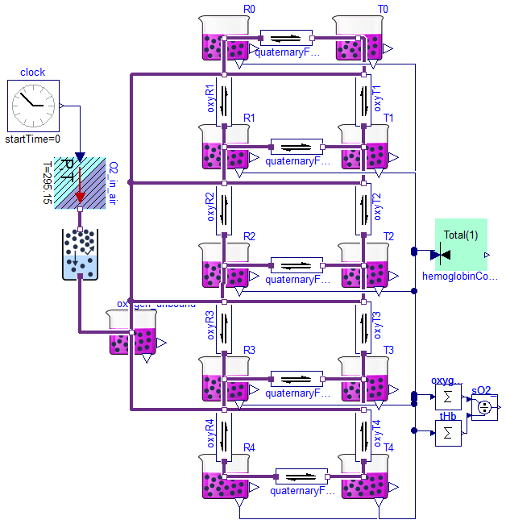
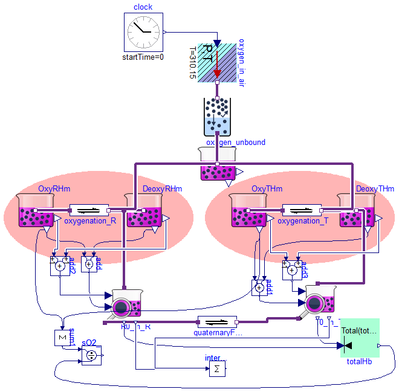
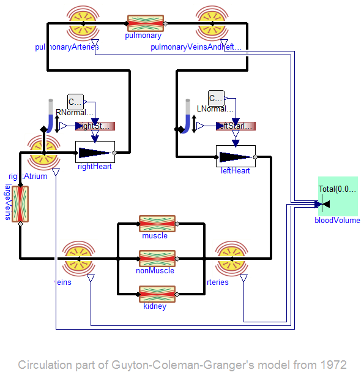
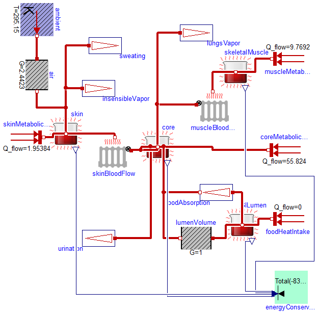
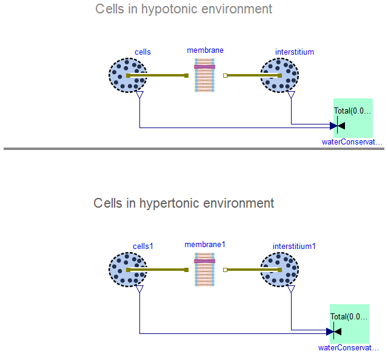

Examples that demonstrate usage of the Pressure flow components
Information
Extends from Modelica.Icons.ExamplesPackage (Icon for packages containing runnable examples).
Package Content

Information
Extends from Modelica.Icons.Example (Icon for runnable examples).
Modelica definition
Information
Extends from Modelica.Icons.Example (Icon for runnable examples).
Modelica definition
Information
Extends from Modelica.Icons.Example (Icon for runnable examples).
Modelica definition

Information
Extends from Modelica.Icons.Example (Icon for runnable examples).
Modelica definition
model SimpleReaction2_in_Equilibrium
extends Modelica.Icons.Example;
import Physiolibrary.Types.*;
Chemical.Components.Substance A(Simulation=SimulationType.SteadyState,
solute_start=0.9);
Chemical.Components.ChemicalReaction reaction(K=1, nP=2);
Chemical.Components.Substance B(
Simulation=SimulationType.SteadyState,
isDependent=true,
solute_start=0.1);
Chemical.Components.Substance C(
Simulation=SimulationType.SteadyState,
isDependent=true,
solute_start=0.1);
Components.MolarConservationLaw totalB_ConservationLaw(
n=2,
Total(displayUnit="mol") = 1,
Simulation=SimulationType.SteadyState);
Components.MolarConservationLaw totalC_ConservationLaw(
n=2,
Total(displayUnit="mol") = 1,
Simulation=SimulationType.SteadyState);
equation
connect(A.q_out,reaction. substrates[1]);
connect(reaction.products[1],B. q_out);
connect(reaction.products[2],C. q_out);
connect(A.solute, totalB_ConservationLaw.fragment[1]);
connect(B.solute, totalB_ConservationLaw.fragment[2]);
connect(C.solute, totalC_ConservationLaw.fragment[1]);
connect(A.solute, totalC_ConservationLaw.fragment[2]);
end SimpleReaction2_in_Equilibrium;

Information
Partial pressure of oxygen in air is the air pressure multiplied by the fraction of the oxygen in air. Oxygen solubility
Extends from Modelica.Icons.Example (Icon for runnable examples).
Modelica definition
model O2_in_water
extends Modelica.Icons.Example;
import Physiolibrary.Types.*;
public
Chemical.Components.Substance oxygen_dissolved(
Simulation=SimulationType.SteadyState,
solute_start=0.000001*7.875647668393782383419689119171e-5,
isDependent=true);
Modelica.Blocks.Sources.Clock oxygenPartialPressure(offset=1e-06);
Modelica.Blocks.Sources.Sine temperature(
amplitude=10,
freqHz=1/60,
offset=310.15);
Modelica.Thermal.HeatTransfer.Sources.PrescribedTemperature
prescribedTemperature;
Chemical.Components.GasSolubility gasSolubility(
useHeatPort=true,
kH_T0(displayUnit="(mmol/l)/kPa at 25degC") = 0.026029047188736,
C=1700);
Chemical.Sources.UnlimitedGasStorage unlimitedGasStorage(
Simulation=Types.SimulationType.SteadyState,
usePartialPressureInput=true,
useHeatPort=true,
T=295.15);
equation
connect(temperature.y, prescribedTemperature.T);
connect(oxygen_dissolved.q_out, gasSolubility.q_in);
connect(prescribedTemperature.port, gasSolubility.heatPort);
connect(oxygenPartialPressure.y, unlimitedGasStorage.partialPressure);
connect(unlimitedGasStorage.q_out, gasSolubility.q_out);
connect(prescribedTemperature.port, unlimitedGasStorage.heatPort);
end O2_in_water;

Information
To understand the model is necessary to study the principles of MWC allosteric transitions first published by
Monod,Wyman,Changeux (1965). "On the nature of allosteric transitions: a plausible model." Journal of molecular biology 12(1): 88-118.
In short it is about binding oxygen to hemoglobin.
Oxgen are driven by its partial pressure using clock source - from very little pressure to pressure of 10kPa.
(Partial pressure of oxygen in air is the air pressure multiplied by the fraction of the oxygen in air.)
Hemoglobin was observed (by Perutz) in two structuraly different forms R and T.
These forms are represented by blocks T0..T4 and R0..R4, where the suffexed index means the number of oxygen bounded to the form.
In equilibrated model can be four chemical reactions removed and the results will be the same, but dynamics will change a lot. ;)
If you remove the quaternaryForm1,quaternaryForm2,quaternaryForm3,quaternaryForm4 then the model in equilibrium will be exactly the same as in MWC article.
Parameters was fitted to data of Severinghaus article from 1979. (For example at pO2=26mmHg is oxygen saturation sO2 = 48.27 %).
Extends from Modelica.Icons.Example (Icon for runnable examples).
Modelica definition
model Allosteric_Hemoglobin_MWC
extends Modelica.Icons.Example;
import Physiolibrary.Types.*;
//extends SteadyStates.Interfaces.SteadyStateSystem(
// Simulation=SteadyStates.SimulationType.SteadyState);
//=States.SimulationType.NoInit); for dynamic simulation
protected
parameter Types.GasSolubility alpha = 0.0105 * 1e-3
"oxygen solubility in plasma";
// by Siggaard Andersen: 0.0105 (mmol/l)/kPa
parameter Types.Fraction L = 7.0529*10^6
"=[T0]/[R0] .. dissociation constant of relaxed <-> tensed change of deoxyhemoglobin tetramer";
parameter Types.Fraction c = 0.00431555
"=KR/KT .. ration between oxygen affinities of relaxed vs. tensed subunit";
parameter Types.Concentration KR = 0.000671946
"oxygen dissociation on relaxed(R) hemoglobin subunit";
//*7.875647668393782383419689119171e-5
//10.500001495896 7.8756465463794e-05
parameter Types.Concentration KT=KR/c
"oxygen dissociation on tensed(T) hemoglobin subunit";
// Types.Fraction sO2 "hemoglobin oxygen saturation";
// parameter Types.AmountOfSubstance totalAmountOfHemoglobin=1;
// Types.AmountOfSubstance totalAmountOfRforms;
// Types.AmountOfSubstance totalAmountOfTforms;
public
Chemical.Components.Substance T0(
stateName="T0",
Simulation=SimulationType.SteadyState,
solute_start=1);
Chemical.Components.Substance T1(
stateName="T1",
Simulation=SimulationType.SteadyState,
solute_start=0);
Chemical.Components.Substance R1(
stateName="R1",
Simulation=SimulationType.SteadyState,
solute_start=0,
isDependent=true);
Chemical.Components.Substance T2(
stateName="T2",
Simulation=SimulationType.SteadyState,
solute_start=0);
Chemical.Components.Substance R2(
stateName="R2",
Simulation=SimulationType.SteadyState,
solute_start=0);
Chemical.Components.Substance T3(
stateName="T3",
Simulation=SimulationType.SteadyState,
solute_start=0);
Chemical.Components.Substance R3(
stateName="R3",
Simulation=SimulationType.SteadyState,
solute_start=0);
Chemical.Components.Substance T4(
stateName="T4",
Simulation=SimulationType.SteadyState,
solute_start=0,
isDependent=true);
Chemical.Components.Substance R4(
stateName="R4",
Simulation=SimulationType.SteadyState,
solute_start=0);
Chemical.Components.Substance R0(
stateName="R0",
Simulation=SimulationType.SteadyState,
solute_start=0);
Chemical.Components.ChemicalReaction quaternaryForm(K=L);
Chemical.Components.ChemicalReaction oxyR1(nP=2, K=KR/4);
Chemical.Components.ChemicalReaction oxyT1(nP=2, K=KT/4);
Chemical.Components.ChemicalReaction oxyR2(nP=2, K=KR/(3/2));
Chemical.Components.ChemicalReaction oxyR3(nP=2, K=KR/(2/3));
Chemical.Components.ChemicalReaction oxyR4(nP=2, K=KR*4);
Chemical.Components.ChemicalReaction oxyT2(nP=2, K=KT/(3/2));
Chemical.Components.ChemicalReaction oxyT3(nP=2, K=KT/(2/3));
Chemical.Components.ChemicalReaction oxyT4(nP=2, K=KT*4);
Chemical.Components.ChemicalReaction quaternaryForm1(K=c*L);
Chemical.Components.ChemicalReaction quaternaryForm2(K=(c^2)*L);
Chemical.Components.ChemicalReaction quaternaryForm3(K=(c^3)*L);
Chemical.Components.ChemicalReaction quaternaryForm4(K=(c^4)*L);
Chemical.Components.Substance oxygen_unbound(solute_start=0.000001*
7.875647668393782383419689119171e-5, Simulation=SimulationType.SteadyState);
Modelica.Blocks.Sources.Clock clock(offset=60);
SteadyStates.Components.MolarConservationLaw hemoglobinConservationLaw(
n=10, Total(displayUnit="mol") = 1,
Simulation=Types.SimulationType.SteadyState);
Chemical.Sources.UnlimitedGasStorage O2_in_air(
Simulation=Types.SimulationType.SteadyState,
T=295.15,
usePartialPressureInput=true);
Chemical.Components.GasSolubility gasSolubility(
useHeatPort=false,
kH_T0=0.026029047188736,
C=1700);
Modelica.Blocks.Math.Sum oxygen_bound(k={1,1,2,2,3,3,4,4}, nin=8);
Modelica.Blocks.Math.Division sO2_
"hemoglobin oxygen saturation";
Modelica.Blocks.Math.Sum tHb(nin=10, k=4*
ones(10));
equation
// sO2 = (R1.solute + 2*R2.solute + 3*R3.solute + 4*R4.solute + T1.solute + 2*T2.solute + 3*T3.solute + 4*T4.solute)/(4*hemoglobinConservationLaw.Total);
// totalAmountOfRforms = R0.solute + R1.solute + R2.solute + R3.solute + R4.solute;
// totalAmountOfTforms = T0.solute + T1.solute + T2.solute + T3.solute + T4.solute;
// totalAmountOfHemoglobin*normalizedState[1] = totalAmountOfRforms + totalAmountOfTforms;
connect(quaternaryForm.products[1],T0. q_out);
connect(oxyR1.products[2], oxygen_unbound.q_out);
connect(oxyR2.products[2], oxygen_unbound.q_out);
connect(oxyR3.products[2], oxygen_unbound.q_out);
connect(oxyR4.products[2], oxygen_unbound.q_out);
connect(oxyR1.substrates[1],R1. q_out);
connect(R1.q_out,oxyR2. products[1]);
connect(oxyR2.substrates[1],R2. q_out);
connect(oxyR3.substrates[1],R3. q_out);
connect(oxyR3.products[1],R2. q_out);
connect(R3.q_out,oxyR4. products[1]);
connect(oxyR4.substrates[1],R4. q_out);
connect(oxyT1.products[1],T0. q_out);
connect(oxyT1.substrates[1],T1. q_out);
connect(oxygen_unbound.q_out, oxyT1.products[2]);
connect(oxygen_unbound.q_out, oxyT2.products[2]);
connect(oxygen_unbound.q_out, oxyT3.products[2]);
connect(oxygen_unbound.q_out, oxyT4.products[2]);
connect(T1.q_out,oxyT2. products[1]);
connect(oxyT2.substrates[1],T2. q_out);
connect(T2.q_out,oxyT3. products[1]);
connect(oxyT3.substrates[1],T3. q_out);
connect(T3.q_out,oxyT4. products[1]);
connect(oxyT4.substrates[1],T4. q_out);
connect(R0.q_out,quaternaryForm. substrates[1]);
connect(R0.q_out,oxyR1. products[1]);
connect(R1.q_out,quaternaryForm1. substrates[1]);
connect(quaternaryForm1.products[1],T1. q_out);
connect(R2.q_out,quaternaryForm2. substrates[1]);
connect(quaternaryForm2.products[1],T2. q_out);
connect(R3.q_out,quaternaryForm3. substrates[1]);
connect(quaternaryForm3.products[1],T3. q_out);
connect(R4.q_out,quaternaryForm4. substrates[1]);
connect(quaternaryForm4.products[1],T4. q_out);
connect(R4.solute, hemoglobinConservationLaw.fragment[1]);
connect(T4.solute, hemoglobinConservationLaw.fragment[2]);
connect(R3.solute, hemoglobinConservationLaw.fragment[3]);
connect(T3.solute, hemoglobinConservationLaw.fragment[4]);
connect(R2.solute, hemoglobinConservationLaw.fragment[5]);
connect(T2.solute, hemoglobinConservationLaw.fragment[6]);
connect(R1.solute, hemoglobinConservationLaw.fragment[7]);
connect(T1.solute, hemoglobinConservationLaw.fragment[8]);
connect(R0.solute, hemoglobinConservationLaw.fragment[9]);
connect(T0.solute, hemoglobinConservationLaw.fragment[10]);
connect(oxygen_unbound.q_out, gasSolubility.q_in);
connect(O2_in_air.q_out, gasSolubility.q_out);
connect(clock.y, O2_in_air.partialPressure);
connect(R1.solute, oxygen_bound.u[1]);
connect(T1.solute, oxygen_bound.u[2]);
connect(R2.solute, oxygen_bound.u[3]);
connect(T2.solute, oxygen_bound.u[4]);
connect(R3.solute, oxygen_bound.u[5]);
connect(T3.solute, oxygen_bound.u[6]);
connect(R4.solute, oxygen_bound.u[7]);
connect(T4.solute, oxygen_bound.u[8]);
connect(oxygen_bound.y, sO2_.u1);
connect(sO2_.u2, tHb.y);
connect(R0.solute, tHb.u[1]);
connect(T0.solute, tHb.u[2]);
connect(R1.solute, tHb.u[3]);
connect(T1.solute, tHb.u[4]);
connect(R2.solute, tHb.u[5]);
connect(T2.solute, tHb.u[6]);
connect(R3.solute, tHb.u[7]);
connect(T3.solute, tHb.u[8]);
connect(R4.solute, tHb.u[9]);
connect(T4.solute, tHb.u[10]);
end Allosteric_Hemoglobin_MWC;
Allosteric hemoglobin model implemented by Speciation blocks

Information
Extends from Chemical.Examples.Hemoglobin.Allosteric_Hemoglobin2_MWC (Monod,Wyman,Changeux (1965) - The same allosteric hemoglobin model as Allosteric_Hemoglobin_MWC implemented by Speciation blocks).
Parameters
| Type | Name | Default | Description |
|---|
| MolarEnergy | dHT | 10000 | Enthalpy of heme oxygenation in T hemoglobin form [J/mol] |
| MolarEnergy | dHR | 20000 | Enthalpy of heme oxygenation in R hemoglobin form [J/mol] |
| MolarEnergy | dHL | -1000 | Enthalpy of reaction T->R as hemoglobin tetramer structure change [J/mol] |
| Fraction | L | 7.0529*10^6 | =[T0]/[R0] .. dissociation constant of relaxed <-> tensed change of deoxyhemoglobin tetramer [1] |
| Fraction | c | 0.00431555 | =KR/KT .. ration between oxygen affinities of relaxed vs. tensed subunit [1] |
| Concentration | KR | 0.000671946 | oxygen dissociation on relaxed(R) hemoglobin subunit [mol/m3] |
| Concentration | KT | KR/c | oxygen dissociation on tensed(T) hemoglobin subunit [mol/m3] |
| AmountOfSubstance | totalAmountOfHemoglobin | 1 | [mol] |
Modelica definition
Cardiovascular part of Guyton-Coleman-Granger's model from 1972

Information
Cardiovascular subsystem in famous Guyton-Coleman-Granger model from 1972.
Model, all parameters and all initial values are from article:
A.C. Guyton, T.G. Coleman, H.J. Granger (1972). "Circulation: overall regulation." Annual review of physiology 34(1): 13-44.
Extends from Hydraulic.Examples.CardiovascularSystem_GCG (Cardiovascular part of Guyton-Coleman-Granger's model from 1972).
Modelica definition
model CardiovascularSystem_GCG_SteadyState
"Cardiovascular part of Guyton-Coleman-Granger's model from 1972"
//extends Modelica.Icons.Example;
extends Hydraulic.Examples.CardiovascularSystem_GCG(
pulmonaryArteries(Simulation=Types.SimulationType.SteadyState),
pulmonaryVeinsAndLeftAtrium(Simulation=Types.SimulationType.SteadyState),
rightAtrium(Simulation=Types.SimulationType.SteadyState),
arteries(Simulation=Types.SimulationType.SteadyState),
veins(Simulation=Types.SimulationType.SteadyState,
isDependent=true));
import Physiolibrary.Types.*;
Components.MassConservationLaw bloodVolume(
n=5,
Simulation=Types.SimulationType.SteadyState,
Total=0.005);
equation
connect(pulmonaryArteries.volume, bloodVolume.fragment[4]);
connect(pulmonaryVeinsAndLeftAtrium.volume, bloodVolume.fragment[5]);
connect(rightAtrium.volume, bloodVolume.fragment[1]);
connect(veins.volume, bloodVolume.fragment[2]);
connect(arteries.volume, bloodVolume.fragment[3]);
end CardiovascularSystem_GCG_SteadyState;

Information
Extends from Thermal.Examples.ThermalBody_QHP.
Modelica definition
model ThermalBody_QHP_STeadyState
extends Thermal.Examples.ThermalBody_QHP(
skin(Simulation=Types.SimulationType.SteadyState),
skeletalMuscle(Simulation=Types.SimulationType.SteadyState,
isDependent=true),
core(Simulation=Types.SimulationType.SteadyState),
GILumen(Simulation=Types.SimulationType.SteadyState));
Components.EnergyConservationLaw energyConservationLaw(
n=4,
Simulation=Types.SimulationType.SteadyState,
useTotalInput=false,
Total=-8373.6);
equation
connect(core.relativeHeat, energyConservationLaw.fragment[1]);
connect(skin.relativeHeat, energyConservationLaw.fragment[2]);
connect(skeletalMuscle.relativeHeat, energyConservationLaw.fragment[3]);
connect(GILumen.relativeHeat, energyConservationLaw.fragment[4]);
end ThermalBody_QHP_STeadyState;

Information
Extends from Osmotic.Examples.Cell.
Modelica definition
model Cells_SteadyState
extends Osmotic.Examples.Cell(
cells(Simulation=Types.SimulationType.SteadyState,
isDependent=true),
interstitium(Simulation=Types.SimulationType.SteadyState),
interstitium1(Simulation=Types.SimulationType.SteadyState),
cells1(Simulation=Types.SimulationType.SteadyState,
isDependent=true));
Components.MassConservationLaw waterConservationLaw(
n=2,
Simulation=Types.SimulationType.SteadyState,
Total(displayUnit="l") = 0.002);
Components.MassConservationLaw waterConservationLaw1(
n=2,
Simulation=Types.SimulationType.SteadyState,
Total(displayUnit="l") = 0.002);
equation
connect(cells.volume, waterConservationLaw.fragment[1]);
connect(interstitium.volume, waterConservationLaw.fragment[2]);
connect(cells1.volume, waterConservationLaw1.fragment[1]);
connect(interstitium1.volume, waterConservationLaw1.fragment[2]);
end Cells_SteadyState;
Automatically generated Tue Sep 15 22:54:23 2015.
 Physiolibrary.SteadyStates.Examples.SimpleReaction_in_Equilibrium
Physiolibrary.SteadyStates.Examples.SimpleReaction_in_Equilibrium